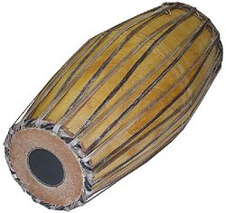

The Mridangam is a percussion instrument from India of ancient origin. It is
the primary rhythmic accompaniment in a Carnatic music ensemble.
During a percussion ensemble, the mridangam is often accompanied by the ghatam,
kanjira, and morsing. The mridangam is nicknamed as the "King of Percussion".
Etymology:
In Tamil culture, it is called a tannumai.The earliest mention of the mridangam
in Tamil literature is found perhaps in the Sangam literature where the
instrument is known as 'tannumai'. The word "Mridangam" is Sandhi or union of
the two Sanskrit words mŗda (clay or earth) and anga (limb), as early Mridangam
were made of hardened clay.
History:

In ancient Hindu sculpture, painting, and mythology, the mridangam is often
depicted as the instrument of choice for a number of deities including Ganesha
(the remover of obstacles) and Nandi, who is the vehicle and follower of Shiva.
Nandi is said to have played the mridangam during Shiva's primordial tandava
dance, causing a divine rhythm to resound across the heavens. The mridangam is
thus also known as "Deva Vaadyam," or "Divine Instrument".
Over the years, the mridangam evolved to be made of different kinds of wood due
to its increased durability, and today, its body is constructed from wood of the
jackfruit tree.
It is widely believed that the tabla, the mridangam's Hindustani
musical counterpart, was first constructed by splitting a mridangam in half.
With the development of the mridangam came the tala (rhythm) system. The system
of talas (or taalams) in Carnatic music may be the most complex percussive
rhythm system of any form of classical music .
Mridangam has a large role in Newa music. One of the earliest Nepal Bhasa
manuscripts on music is a treatise on this instrument called Mridanga
anukaranam.
The importance of a beating has changed over the years. In the old
days, percussionists only used to accompany the lead player like the vocalist
but this time their development is not restricted to accompaniment only but also
to play one instrument shows.
Tamil culture:
In Tamil culture, it is called a tannumai. The earliest mention of the mridangam
in Tamil literature is found perhaps in the Sangam literature where the
instrument is known as 'tannumai'.
In later works like the Silappadikaram also
we find detailed references to it as in the Natyasastra. During the Sangam
period, it was one of the principal percussion instruments to sound the
beginning of war along with murasu and parai because it was believed that its
holy sound will deflect enemy arrows and protect the King.
During the post-Sangam
period, as mentioned in the epic Silappadikaram , it formed a part of the
antarakottu- a musical ensemble at the beginning of dramatic performances that
would later develop into Bharathanatyam. The player of this instrument held the
title tannumai aruntozhil mutalvan
Construction:
The mridangam is a double-sided drum whose body is usually made using a hollowed
piece of jackfruit wood about an inch thick. The two mouths or apertures of the
drum are covered with a goatskin and laced to each other with leather straps
around the circumference of the drum.
These straps are put into a state of high
tension to stretch out the circular membranes on either side of the hull,
allowing them to resonate when struck. These two membranes are dissimilar in
width to allow for the production of both bass and treble sounds from the same
drum.
The bass aperture is known as the thoppi or eda bhaaga and the smaller aperture
is known as the valanthalai or bala bhaaga. The smaller membrane, when struck,
produces higher pitched sounds with a metallic timbre.
The wider aperture
produces lower pitched sounds. The goat skin covering the smaller aperture is
anointed in the center with a black disk made of rice flour, ferric oxide powder
and starch. This black tuning paste is known as the satham or karanai and gives
the mridangam its distinct metallic timbre.
The combination of two inhomogeneous circular membranes allows for the
production of unique and distinct harmonics. Pioneering work on the mathematics
of these harmonics was done by Nobel Prize–winning physicist C. V. Raman.
Methods of use:
Immediately prior to use in a performance, the leather covering the wider
aperture is made moist and a spot of paste made from semolina (rawa) and water
is applied to the center, which lowers the pitch of the left membrane and gives
it a very powerful resonating bass sound. Nowadays, rubber gum is also used to
loosen the membrane helping in creating the bass sound, and its advantage is
that unlike semolina, it will not stick on hands.
The artist tunes the
instrument by varying the tension in the leather straps spanning the hull of the
instrument. This is achieved by placing the mridangam upright with its larger
side facing down, and then striking the tension-bearing straps located along of
circumference of the right membrane with a heavy object (such as a stone).
A
wooden peg is sometimes placed between the stone and the mridangam during the
tuning procedure to ensure that the force is exerted at precisely the point
where it is needed. Striking the periphery of the right membrane in the
direction toward the hull raises the pitch, while striking the periphery from
the opposite side (away from the hull) lowers the pitch.
The pitch must be
uniform and balanced at all points along the circumference of the valanthalai
for the sound to resonate perfectly. The pitch can be balanced with the aid of a
pitch pipe or a tambura. The larger membrane can also be tuned in a similar
manner, though it is not done as frequently.
Note that since the leather straps
are interwoven between both the smaller and larger aperture, adjusting the
tension on one side often can affect the tension on the other.
Posture:
The mridangam is played resting it parallel to the floor. A right-handed
mridangam artist plays the smaller membrane with his or her right hand and the
larger membrane with the left hand.
The mridangam rests upon the right foot and ankle, the right leg being slightly
extended, while the left leg is bent and rests against the hull of the drum and
against the torso of the artist. For a left-handed percussionist, the legs and
hands are switched.
Strokes:
Basic strokes on the mridangam:
Tha:
Non-vibrating tone played on the left hand side with the whole palm.
Dhi:
Non-vibrating tone played on the centre black portion of the right hand side
using middle, ring and small fingers.
Thom:
Vibrating tone played on the outer side of the left hand side.
Nam:
Vibrating tone played on the outer layer of the right hand side using index
finger, minimizing the black portion vibration with middle or ring finger- place
the third finger in the gap in ring and the second finger hits the outer layer
of the right hand side of the Miruthangam (called 'Saatham').
There is also a parallel set of rhythmic solfa passages (known as "solkattu")
which is sounded by mouth to mimic the sounds of the mridangam. Students of this
art are required to learn and vigorously practice both the fingering strokes and
solfa passages to achieve proficiency and accuracy in this art.
Advanced strokes:
Many other strokes are also taught as the training becomes more advanced, which
are generally used as aesthetic embellishments while playing. These notes
include gumki (or gamakam), and chaapu.
The combination of these finger strokes
produces complex mathematical patterns that have both aesthetic and theoretical
appeal. Increasingly complex calculations (kanakku) and metres (nadais) may be
employed when the mridangam is played.
Ta:
A sharp flat note played with the index finger in the middle of the black
portion on the right side of the mridangam.
Gumukki:
A variating bass tone produced by playing on the inner layer of the lower end of
the left hand side .Sound is produced only when there is a special applied
paste.
Full Chapu:
It is a vibrating tone played with the small finger on the right hand side,
between the black patch and the outer layer. The sound is tuned to the tonic of
the tambura.
Ara Chapu:
A note similar to Chapu, but is an octave higher, and is played with the side of
the hand and less of the pinky.
Dheem:
A vibrational tone version of nam played on the black portion of the mridangam.
Classically, training is by dharmic apprenticeship and includes both the yoga of
drum construction and an emphasis on the internal discipline of voicing
mridangam tone and rhythm both syllabically and linguistically, in accordance
with Rigveda, more than on mere performance.
Modern usage:
Today the mridangam is most widely used in Carnatic music performances. These
performances take place all over Southern India and are now popular all over the
world. As the principal rhythmic accompaniment (pakkavadyam), the mridangam has
a place of utmost importance, ensuring all of the other artists are keeping
their timing in check while providing support to the main artist.
One of the
highlights of a modern Carnatic music concert is the percussion solo (thani
avarthanam), where the mridangam artist and other percussionists such as
kanjira, morsing, and ghatam vidwans exchange various complex rhythmic patterns,
culminating in a grand finale where the main artists resumes where he or she
left off.
Mridangam is used as an accompanying instrument in Yakshagana Himmela
(orchestra) where it is called Maddale.
However, Mridangam used in Yakshagana is
markedly different in structure and acoustics from the ones used in Carnatic
music.
Significant players of the mridangam in modern times are T. K. Murthy,
Umayalpuram K. Sivaraman, Vellore G. Ramabhadran, Trichy Sankaran, T S
Nandakumar, Karaikudi Mani, Madurai T. Srinivasan (Seenakutti), Yella
Venkateswara Rao, Thiruvarur Bakthavathsalam, Trichur C Narendran who have been
playing and advancing the technique since decades.